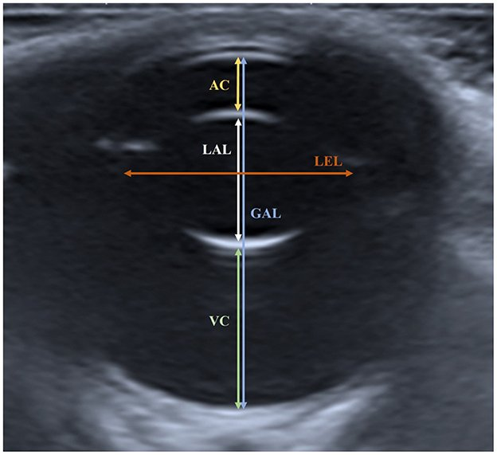
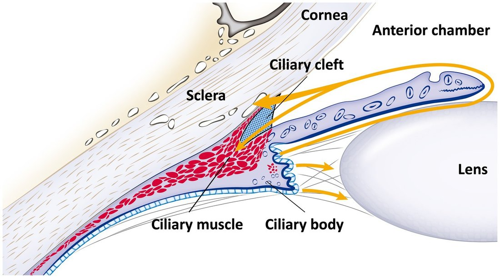
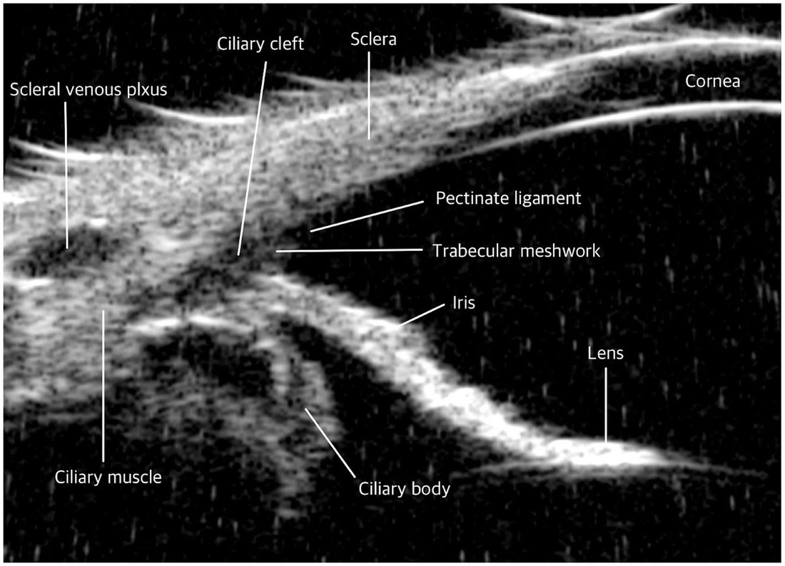
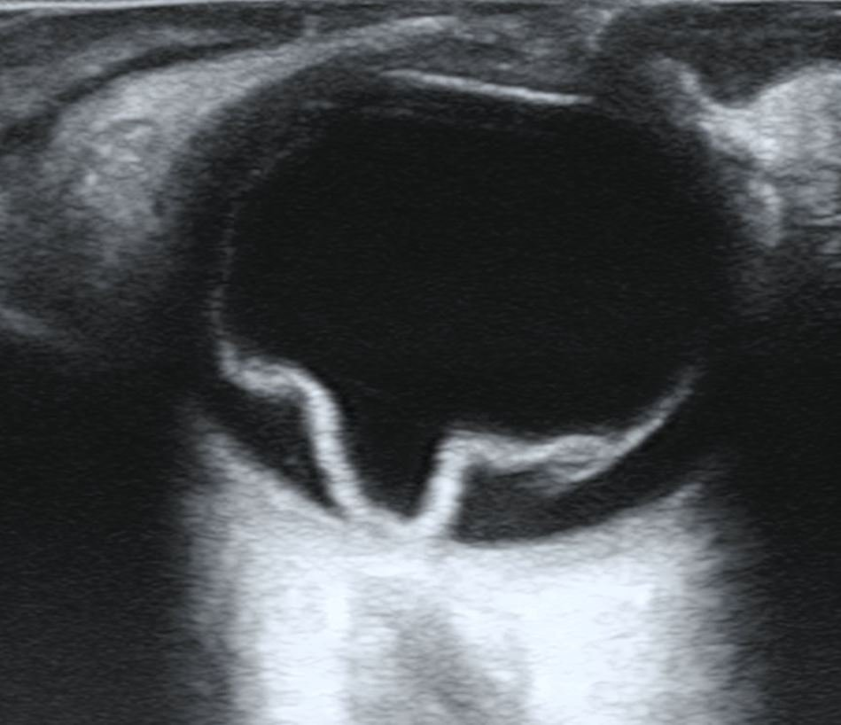
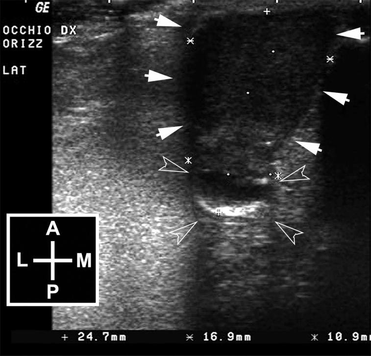

核心結論
- 什麼時候用
- 眼睛裡面看不進去的時候（角膜水腫、前房出血、成熟白內障、瞳孔縮小），或需要知道眼睛裡面有沒有東西、東西在哪裡、眼球多大的時候：外傷、突眼、牛眼、白內障手術前、眼內腫瘤分期。
- 兩種機器
- 一般 B-mode（約 7.5–15 MHz）看整顆眼球與球後；超音波生物顯微鏡（Ultrasound Biomicroscopy, UBM）（35–100 MHz）只看前段 4–5 mm，但能量出虹膜、睫狀體、隅角的厚度與角度（Kim 2026）。
- 正常影像的口訣式重點
- 液體（前房、玻璃體）是黑的；水晶體只看得到前後兩條囊的弧線，內部是黑的；後壁是一條連續亮弧，視網膜、脈絡膜、鞏膜正常時分不開；視神經是後方的低回音帶。
- 貓的數字
- 波斯貓 B-mode：前房 4.1、水晶體 7.7、玻璃體 8.2、眼軸 20.7 mm（Mirshahi 2014）。家貓 UBM：虹膜中段厚度 0.53 ± 0.11 mm、根部 0.34 ± 0.06 mm、隅角 28.9°（Kim 2026）。貓前房比狗深。
- FDIM 在超音波上
- 黑色素沉著與早期 FDIM 在一般 B-mode 上通常都是正常的，B-mode 分不出來。UBM（或 OCT）可能看到病灶處虹膜比對側厚。晚期才會在 B-mode 看到：虹膜／睫狀體增厚或團塊、隅角被堵、牛眼、水晶體脫位、視網膜剝離、腫瘤長出鞏膜。所以 FDIM 的超音波是用來排除腫瘤已往後走和留基準值，不是用來確診。
- 容易搞混
- ① 出血或發炎團塊在超音波上可以像腫瘤（Gallhoefer 2013）。② 有出血時，約三分之一的視網膜剝離會被漏判。③ 視網膜剝離的膜後端連在視神經盤，後玻璃體剝離不連。④ 老年動物的玻璃體輕度液化很常見，不要過度解讀。
標「文獻」的是這次讀到全文或摘要的研究，作者年份寫在旁邊；標「講義」的是 FASAVA 2026 Kobayashi 講義；標「補充」的是一般影像學與眼科知識，這次沒有另外找文獻逐條核對；標「推論」的是我依資料推出的看法。所有示意圖都是自繪的，表達的是文獻描述的特徵，不是實際比例；實際影像都標了出處與授權。FDIM 本身的分期、採樣與處置見〈貓虹膜色素沉著與 FDIM 診斷流程〉。
原理、設備與適應症
眼球幾乎都是液體，是超音波最好穿透的器官之一。頻率越高，解析度越好、但看得越淺：看整顆眼球用一般探頭，看虹膜與隅角的細節要用 UBM。
四種眼科超音波工具
| 工具 | 頻率／特性 | 看什麼 | 出處 |
|---|---|---|---|
| B-mode（亮度模式） | 一般醫院的線性或微凸探頭，約 7.5–15 MHz；貓眼內腫瘤病例用 13 MHz 線性探頭 | 整顆眼球、水晶體位置、玻璃體、視網膜、眼球大小、球後 | 補充；Lamagna 2019 |
| UBM（超音波生物顯微鏡） | 35–100 MHz，軸向解析度可到 20 μm、側向 50 μm，但穿透只有 4–5 mm | 角膜、前房、虹膜厚度、睫狀體、隅角（iridocorneal angle）、睫狀裂（ciliary cleft） | 文獻：Kim 2026 |
| 都卜勒（Doppler） | 彩色或能量都卜勒看血流 | 團塊裡有沒有血流（腫瘤 vs 血塊）、剝離的膜有沒有血管 | 補充；犬病例報告用能量都卜勒分辨剝離視網膜與血塊（見 FDIM 專題第 6 節） |
| 顯影超音波（Contrast-Enhanced Ultrasound, CEUS） | 靜脈打微氣泡顯影劑 | 在犬貓用來分辨視網膜剝離與玻璃體膜，比 B-mode 和都卜勒好；也用來看團塊灌流 | 文獻：Labruyère 2011（標題與一句結論）；Blohm 2019 引述 |
適應症
| 情境 | 超音波要回答的問題 |
|---|---|
| 眼內看不到：角膜水腫或瘢痕、前房出血或積膿、成熟白內障、瞳孔無法散大 | 視網膜有沒有剝離？有沒有團塊？水晶體在哪裡？ |
| 白內障手術前 | 排除視網膜剝離、水晶體囊破裂、玻璃體病變；剝離的眼睛手術後也看不到 |
| 外傷 | 眼球有沒有破裂、異物、出血、水晶體脫位 |
| 眼球突出、斜視、第三眼瞼突出 | 球後有沒有團塊、膿瘍、異物 |
| 牛眼或眼球變小 | 兩眼眼軸長度比較、眼內有沒有團塊（續發性青光眼的原因） |
| 眼內團塊或虹膜色素病灶 | 範圍、有沒有延伸到睫狀體／脈絡膜／鞏膜外（腫瘤分期） |
補充：上表為一般眼科影像學教材的適應症整理。
角膜有深層潰瘍、後彈力膜膨出（descemetocele）或已穿孔時，不要用探頭直接壓角膜，探頭壓力可能讓角膜破裂（文獻回顧）。改用隔著閉合眼瞼掃描，或延後檢查。懷疑眼球破裂時同樣避免加壓。
操作步驟與副作用
一般 B-mode 多數動物清醒、只點表面麻醉就能做；UBM 要讓眼球完全不動，貓的研究是在全身麻醉下做的。
B-mode 操作步驟
① 經角膜（transcorneal）：探頭隔大量凝膠直接放角膜上，影像最好。
② 經眼瞼（transpalpebral）：閉眼後放在上眼瞼上，影像較差、有眼瞼的回音，但適合角膜脆弱或不配合的動物。
③ 墊高（standoff）：加厚的凝膠層或水囊，讓角膜離開探頭近場的雜訊區，前段看得較清楚（補充）。
UBM 的做法（貓研究）
- Kim 2026 的 20 隻家貓：檢查前 1 小時口服 gabapentin 100 mg，再以 propofol 6 mg/kg IV 誘導、isoflurane 維持，背臥、上眼瞼開瞼器，點 0.5% proparacaine，探頭套內裝蒸餾水的薄膜套（ClearScan），探頭垂直角膜緣掃 12 點鐘位置（文獻）。
- 作者說明貓和狗不同：貓角膜相對大、鞏膜露出少，要看清楚角膜緣必須讓眼球完全不動，所以用全身麻醉（文獻）。
- UBM 探頭要持續接觸，壓力會讓隅角變形，量出來的角度會變（Kim 2025 回顧）。追蹤時盡量同一人、同姿勢、同位置。
副作用與風險
| 風險 | 原因 | 預防 |
|---|---|---|
| 角膜擦傷 | 探頭摩擦、凝膠乾掉 | 凝膠給足、不拖行；結束後沖洗，必要時螢光染色（補充） |
| 角膜破裂 | 深層潰瘍或後彈力膜膨出時加壓 | 改經眼瞼或延後（文獻回顧） |
| 眼心反射（oculocardiac reflex） | 壓迫眼球引起迷走神經反射、心跳變慢 | 輕壓；麻醉下做 UBM 時監測心跳（補充） |
| 麻醉風險 | UBM 在貓需要全身麻醉 | 依一般麻醉前評估（文獻：Kim 2026 的做法） |
| 影響其他檢查結果 | 麻醉劑、凝膠 | 依步驟 1 的順序（推論） |
正常影像
判讀的基本規則：液體黑、界面亮。超音波只有在兩種組織交界、而且聲波垂直打到時才會有強回音，所以水晶體只看得到前後囊。
| 構造 | 正常回音 | 判讀要點 |
|---|---|---|
| 角膜 | 最前方一到兩條平行高回音線 | 貼探頭的近場常有雜訊，要看角膜用墊高法或 UBM |
| 前房 | 無回音 | 出現點狀或線狀回音：出血、積膿、纖維蛋白 |
| 虹膜、睫狀體 | 水晶體前方兩側的中等回音條帶，根部接睫狀體 | B-mode 只看得到大概輪廓，厚度要用 UBM 量 |
| 水晶體 | 前囊、後囊兩條弧形高回音，內部無回音；赤道部通常看不到 | 內部出現回音＝白內障；位置偏移＝脫位 |
| 玻璃體 | 無回音 | 老年動物可見少量淡回音（液化），不一定有臨床意義 |
| 後壁 | 連續的弧形高回音（視網膜＋脈絡膜＋鞏膜） | 正常時三層分不開；分開或往內隆起就是異常 |
| 視神經 | 後壁正後方的低回音帶 | 視神經盤處後壁略凹或略隆 |
| 球後 | 高回音的脂肪錐，內有低回音的肌肉 | 出現低回音腔或團塊，或眼球後壁被壓凹：球後病變 |
補充：上表為一般影像學教材的正常回音描述。

UBM 看到的前段


正常測量值（貓／犬）
貓的資料比狗少很多。實務上最可靠的仍是和對側眼比；下面的數字用來判斷「兩眼都異常」或沒有對側眼可比的時候。
貓 B-mode：波斯貓（Mirshahi 2014）
| 項目 | 平均 ± 標準差（mm） |
|---|---|
| 前房深度 | 4.1 ± 0.7 |
| 水晶體厚度 | 7.7 ± 0.5 |
| 玻璃體腔深度 | 8.2 ± 0.4 |
| 眼球前後徑（眼軸） | 20.7 ± 1.0 |
- 20 隻健康波斯貓、40 眼；左右眼之間、水平與垂直切面之間都沒有顯著差異。眼軸、前房、水晶體厚度與頭圍正相關（文獻：摘要，作者未開放全文）。
- 限制：波斯貓是短頭品種。2026 年土耳其研究比較短頭與非短頭貓，短頭貓的眼軸與水晶體赤道徑較短、前房較深、水晶體較厚、玻璃體較淺（文獻：摘要，數值未讀到）。所以這組數字不能直接套到家貓。
貓 UBM：家貓（Kim 2026）
20 隻健康短毛家貓（Domestic Shorthair）、20 眼，全身麻醉下量 12 點鐘位置（文獻：全文）。挑出和臨床最相關的項目：
| 項目 | 平均 ± 標準差 | 範圍 | 臨床意義 |
|---|---|---|---|
| 虹膜中段厚度（Iris Middle Width, IMW） | 0.53 ± 0.11 mm | 0.35–0.73 | FDIM、淋巴瘤造成的虹膜增厚 |
| 虹膜根部厚度（Iris Base Width, IBW） | 0.34 ± 0.06 mm | 0.24–0.47 | 同上；根部增厚會壓迫隅角 |
| 前房深度（ACD） | 4.11 ± 0.32 mm | 3.60–4.65 | 和波斯貓 B-mode 的 4.1 mm 一致 |
| 周邊前房深度（P-ACD） | 3.11 ± 0.21 mm | 2.63–3.52 | |
| 隅角（Iridocorneal Angle, ICA） | 28.89 ± 4.40° | 20.3–37.0 | 變窄：續發性青光眼、虹膜根部被推擠 |
| 隅角開口距離（AOD） | 1.71 ± 0.40 mm | 1.12–2.58 | |
| 睫狀裂寬度（CCW） | 1.19 ± 0.16 mm | 0.84–1.41 | 房水出口 |
| 睫狀裂長度（CCL） | 2.07 ± 0.23 mm | 1.66–2.48 | |
| 睫狀體厚度（縱向纖維區，Lf-CBT） | 0.48 ± 0.08 mm | 0.36–0.62 | 睫狀體增厚：腫瘤浸潤、發炎 |
| 睫狀體軸長（CBAXL） | 2.04 ± 0.39 mm | 1.19–2.56 | |
| 角膜緣角膜厚度（PCT） | 590 ± 72 μm | 350–680 | 水腫時增加 |
- 多數參數不受性別、體重、年齡影響，只有少數虹膜與前房參數有相關（文獻）。
- 作者明確寫到：虹膜厚度（IBW、IMW）在貓特別有用，因為黑色素沉著與 FDIM 難區分，IBW 或 IMW 增加與腫瘤侵犯和進展有關，這組正常值可用於縱向追蹤（文獻，引用 Kayes & Blacklock 2022 與一例 FDIM 病例報告）。但沒有提出區分 FDIM 的切點。
- 和狗比：貓的前房明顯較深（水晶體位置較後面），幾何隅角也較寬（文獻：Kim 2026 引言）。
犬 B-mode（Kim 2024，120 隻體態理想的健康犬）
| 體重組 | 前房 AC | 水晶體軸長 LAL | 玻璃體 VC | 眼軸 GAL |
|---|---|---|---|---|
| 1–5 kg（n=51） | 2.6 mm | 6.1 mm | 7.8 mm | 17.3 mm |
| 5–10 kg（n=45） | 2.8 mm | 6.2 mm | 9.1 mm | 18.4 mm |
| 10–20 kg（n=12） | 3.3 mm | 6.2 mm | 9.1 mm | 19.2 mm |
| 20–35 kg（n=12） | 3.5 mm | 6.7 mm | 9.5 mm | 20.3 mm |
- 原文單位為 cm，此表換算成 mm 並四捨五入；左右眼無差異（文獻：全文表 1）。
- 水晶體赤道徑與眼軸長度隨體重增加；水晶體赤道徑 ÷ 眼軸長度（LEL:GAL）= 0.642 ± 0.022，不受體重與品種影響，可以在沒有品種正常值時參考（文獻）。
異常：前段與水晶體
前段的問題多半用裂隙燈就看得到；超音波的價值在角膜或前房混濁時，以及要知道團塊往後延伸多深的時候。
| 發現 | 超音波表現 | 鑑別與意義 |
|---|---|---|
| 前房出血／積膿／纖維蛋白 | 前房內點狀、絮狀或線狀回音，可沉積在下方 | 出血的血塊可以像團塊；有疑慮時看都卜勒有無血流（補充） |
| 虹膜／睫狀體腫塊 | 實質、中到高回音，形狀不規則，可能有血流 | 貓：FDIM、淋巴瘤、外傷後肉瘤、虹膜睫狀體腺瘤（補充）。超音波和組織學在虹膜睫狀體腫瘤的一致性好（Gallhoefer 2013） |
| 葡萄膜囊腫 | 圓形、壁薄、內部無回音 | 和實質腫瘤最重要的分別：囊腫內部是黑的，腫瘤內部有回音（補充） |
| 虹膜增厚 | B-mode 多半看不出；UBM 厚度大於對側或超過正常範圍 | FDIM、淋巴瘤、葡萄膜炎（文獻：Kim 2026 引言） |
| 隅角變窄或關閉 | UBM：虹膜根部貼到角膜後面、ICA 變小、睫狀裂塌陷 | 續發性青光眼。貓正常 ICA 約 29°（Kim 2026） |
| 白內障 | 水晶體內部出現回音；膨脹期水晶體變厚 | 白內障手術前必須做超音波排除視網膜剝離（補充） |
| 水晶體囊破裂 | 囊的亮弧不連續、水晶體物質流到玻璃體 | 外傷；貓外傷後肉瘤與水晶體破裂有關（補充） |
| 水晶體脫位 | 前脫位：水晶體在前房；後脫位：在玻璃體，常沉到下方 | 貓多為慢性葡萄膜炎或青光眼的續發結果（補充）。講義晚期 FDIM 病例 Moco 也有脫位 |
異常：玻璃體與視網膜
這是 B-mode 最常被問的區域：眼底看不到時，視網膜還在不在原位？玻璃體裡那條線到底是什麼？
視網膜剝離 vs 後玻璃體剝離
| 視網膜剝離（Retinal Detachment, RD） | 後玻璃體剝離（PVD）／玻璃體膜 | |
|---|---|---|
| 後端附著 | 連在視神經盤（文獻：犬 182 例系列、Vet Times 回顧） | 不連，或只鬆鬆地貼近 |
| 前端 | 連到鋸齒緣 | 可延伸到水晶體後方 |
| 形狀 | 完全剝離呈 V 形、海鷗翅膀狀；部分剝離或合併撕裂時沒有典型形狀（文獻回顧） | 平滑弧線 |
| 亮度與厚度 | 較亮、較厚，降低增益後仍看得到（補充） | 較細、較淡，降增益就消失（補充） |
| 動態 | 晃動較小 | 晃動大、後動作明顯（補充） |
| 血流 | 可能有血流訊號；CEUS 會顯影 | 沒有血流（文獻：Labruyère 2011 犬貓 CEUS） |

其他後段發現
| 發現 | 超音波表現 | 意義 |
|---|---|---|
| 玻璃體液化（syneresis）、退化 | 玻璃體內淡的點或細線 | 正常老年犬常見、與年齡相關，不要過度解讀（文獻回顧） |
| 玻璃體出血 | 點狀回音，可沉積、機化成膜 | 外傷、高血壓、凝血異常、腫瘤（補充）。出血會遮住視網膜剝離（Gallhoefer 2013，見第 9 節） |
| 星狀玻璃體變性 | 多個高回音點，懸浮在玻璃體中 | 鈣與脂質複合物，多半是老化或偶然發現（文獻回顧） |
| 眼內炎（endophthalmitis） | 玻璃體瀰漫性回音、膜狀物，眼壁增厚 | 貓有專門研究眼內炎超音波表現（Ali 2020，只讀到標題，補充） |
| 脈絡膜剝離 | 從周邊往內的厚、圓頂狀隆起，不連到視神經盤 | 低眼壓、手術後、發炎（補充） |
| 後壁團塊或增厚 | 從眼壁往內隆起的實質團塊，或局部眼壁增厚 | 貓：淋巴瘤、轉移性腫瘤、FDIM 侵犯脈絡膜、肉芽腫（補充） |
貓視網膜剝離最常見的原因是全身性高血壓（講義 Part 3），看到剝離要量血壓，並找慢性腎病、甲狀腺功能亢進等病因。高血壓也常伴隨眼內出血。
異常：眼球大小與球後
眼球大小一定要兩眼一起量，同一切面、同一量法。
| 發現 | 超音波表現 | 意義 |
|---|---|---|
| 牛眼 | 眼軸大於對側眼 | 慢性青光眼。講義病例 Moco 患眼 28.8 mm（講義 p.45），對照波斯貓平均 20.7 mm |
| 眼球萎縮（phthisis bulbi）／小眼 | 眼球小、壁厚、內部結構紊亂，可能有礦物化 | 慢性發炎或外傷的終點。萎縮眼仍可能長出腫瘤（Lamagna 2019） |
| 眼球破裂 | 輪廓不規則或塌陷、眼內大量出血 | 檢查時不要加壓（補充） |
| 異物 | 高回音點或線，後方有聲影或迴響 | 穿刺傷；植物性異物回音可能不強（補充） |
| 球後膿瘍／蜂窩性組織炎 | 球後低回音腔或不均質區、眼球後壁被壓平或壓凹 | 常與口腔或牙齒問題相關；可超音波導引採樣（補充） |
| 球後腫瘤 | 球後實質團塊，眼球被推移 | 超音波看範圍有限，骨頭侵犯要用 CT（補充） |
| 腫瘤長出鞏膜外 | 眼壁亮弧中斷、鞏膜外出現軟組織 | 晚期 FDIM 的不良預後因子之一（見 FDIM 專題第 1 節） |
FDIM 在超音波上看得到什麼
FDIM 從虹膜前表面開始，往下侵犯基質，再往隅角、睫狀體、脈絡膜、鞏膜走。超音波看得到的，是它已經走到哪裡；一般 B-mode 的解析度追不到最早的變化。
黑色素沉著和早期 FDIM 在一般 B-mode 上通常都是正常的。B-mode 沒有異常不能排除 FDIM；有異常時，則表示病灶可能已經不是早期。早期變化要靠 UBM 或前眼節 OCT 看「病灶處虹膜有沒有比對側厚」，這也只是輔助（推論，依 Kim 2026、Komatsu 2024、Kayes & Blacklock 2022 整理）。
各期的超音波表現
| 分期（Kayes 2025） | 一般 B-mode | UBM／前眼節 OCT | 判讀 |
|---|---|---|---|
| 黑色素沉著（色素細胞只在前表面） | 正常 | 厚度與對側眼相當。OCT 的 PN 比值平均 0.99（Komatsu 2024）；UBM 家貓正常虹膜中段 0.53 ± 0.11 mm（Kim 2026） | 留下兩眼基準值，之後追蹤 |
| 早期 FDIM（侵入虹膜基質） | 通常正常 | 可能局部增厚。OCT PN 比值平均 1.28（Komatsu 2024），但早期 FDIM 4 隻中有 2 隻表面平滑；UBM 沒有發表過的切點 | 增厚支持往積極處置走，但不增厚也不能排除 |
| 晚期 FDIM（侵犯睫狀體、脈絡膜、鞏膜） | 虹膜／睫狀體增厚或團塊、隅角區軟組織、牛眼、水晶體脫位、視網膜剝離；鞏膜外延伸時眼壁亮弧中斷 | 虹膜全面增厚、根部與睫狀體被浸潤、ICA 變窄或關閉、睫狀裂塌陷 | 轉移風險高（Wiggans 2016：鞏膜外延伸、侵犯脈絡膜為預測因子），建議摘眼並做全身分期 |
真實影像


超音波在 FDIM 追蹤裡的實際用途
- 第一次發現色斑時留基準值：兩眼眼軸長度、前房深度，有 UBM 時加量病灶處與對側同部位的虹膜厚度、隅角（推論）。
- 決定摘眼前：確認有沒有往睫狀體、脈絡膜、鞏膜外走，這會影響預後判斷（推論，依 Wiggans 2016 的預測因子）。
- 眼內看不清楚時：角膜水腫、前房出血、青光眼眼睛，只能靠超音波看眼內（補充）。
- 全身分期：FDIM 轉移最常見到肝、肺、脾、淋巴結、骨（講義 p.40），腹部超音波看肝脾、胸腔 X 光或 CT 看肺，這是另一種超音波，見 FDIM 專題第 7 節。
貓虹膜／睫狀體團塊的鑑別（超音波分不出組織類型）
- FDIM：從色斑開始、慢慢進展，通常單側。
- 淋巴瘤：虹膜與睫狀體瀰漫增厚，常合併葡萄膜炎，可能雙側（補充）；Kim 2026 也把淋巴瘤列為虹膜增厚的原因。
- 外傷後眼內肉瘤：有外傷或水晶體破裂病史，多年後出現（補充）。
- 虹膜睫狀體腺瘤／腺癌、葡萄膜囊腫（內部無回音）、肉芽腫或膿瘍（葡萄膜炎）（補充）。
- 出血或發炎團塊可以像腫瘤（Gallhoefer 2013），最終要靠組織學。
陷阱與限制
超音波很敏感，但不一定特異；看到東西不等於知道它是什麼，沒看到也不等於沒有。
- 虹膜或睫狀體腫瘤：超音波和組織學的一致性好。
- 視網膜剝離：一致性只有中等；其中一個機構漏判 14／38 眼（37%），多數是有眼內出血的眼睛。
- 出血或發炎團塊有時被判讀成腫瘤。
文獻：J Am Vet Med Assoc. 2013;243(3):376–388（摘要）
| 陷阱 | 怎麼避免 |
|---|---|
| 近場雜訊蓋住角膜與前房 | 墊高法（加厚凝膠或水囊）、改用 UBM（補充） |
| 切面不在軸上，前房或眼軸量錯 | 確認同時看到水晶體前後囊與視神經（Kim 2024 量法） |
| 增益太高，玻璃體出現假回音；太低，淡的剝離不見 | 先高後低，兩眼同設定（補充） |
| 水晶體後方的折射與聲影，讓後壁看起來不連續 | 從不同角度斜掃（補充） |
| 老年動物玻璃體液化被當成病變 | 與年齡相關、常見，不要過度解讀（文獻回顧） |
| UBM 探頭壓力讓隅角變形 | 輕壓、同一人同姿勢同位置追蹤（Kim 2025） |
| 拿波斯貓或狗的數字套家貓 | 優先和對側眼比；記住短頭貓的眼睛比例不同（Kafkas 2026 摘要） |
判讀順序與報告範本
固定由外往內、由前往後，才不會只看到最明顯的東西就停下來。
報告範本
| 項目 | 右眼 OD | 左眼 OS |
|---|---|---|
| 方式 | 經角膜／經眼瞼；探頭 ___ MHz；鎮靜：有／無；切面：水平、垂直 | |
| 眼軸長度（mm） | ||
| 前房深度（mm） | ||
| 水晶體厚度（mm）、位置、內部回音 | ||
| 虹膜／睫狀體（厚度、團塊、位置以時鐘方向描述） | ||
| 玻璃體（無回音／點狀／膜狀；動態） | ||
| 視網膜／後壁（是否附著；剝離是否連到視神經盤） | ||
| 視神經、球後 | ||
| 都卜勒（若有團塊） | ||
| 結論與建議 | 例：「右眼 B-mode 未見虹膜睫狀體團塊、水晶體位置正常、視網膜附著；B-mode 無法評估早期虹膜浸潤，建議 UBM／OCT 並依 FDIM 流程追蹤」 | |
推論：範本依本頁各節整理；描述位置時用時鐘方向（例如「4 點鐘」），與裂隙燈照片對得起來。
自我測驗
※ 題目為依本頁內容自編的複習題，不是國考或考古題。
參考資料與圖片授權
讀到全文的文獻
- Kim D, Kwon M, Jung JS, Hwang J, et al. Anterior segment measurements in normal cats using ultrasound biomicroscopy. Vet Sci. 2026;13(1):50. doi:10.3390/vetsci13010050（PMC 全文，CC BY 4.0）
- Kim Y, Kim B, Lee K, Yoon H. Ultrasonographic assessment of ocular parameters in dogs: effects of weight and breed, controlled for BCS and age. Front Vet Sci. 2024;11:1482948.（PMC 全文，CC BY 4.0）
- Kim D, Kwon H, Hwang J, Jung JS, et al. An in-depth review on utilizing ultrasound biomicroscopy for assessing the iridocorneal angle and ciliary body in canines. Front Vet Sci. 2025;12:1501405.（PMC 全文，CC BY 4.0）
- Lamagna B, Uccello V, Prisco F, Russo V, et al. Iris melanoma associated with unilateral phthisis bulbi in a 13-year-old domestic shorthair female cat. Vet Q. 2019;39(1):131 起.（PMC 全文，CC BY 4.0）
- Blohm KO, Hittmair KM, Tichy A, et al. Quantitative, noninvasive assessment of intra- and extraocular perfusion by contrast-enhanced ultrasonography and its clinical applicability in healthy dogs. Vet Ophthalmol. 2019;22(6):767 起.（PMC 全文）
- Komatsu H, et al. Vet Sci. 2024;11(6):261（OCT 與 PN 比值；細節見 FDIM 專題）。
只讀到摘要或標題
- Mirshahi A, Shafigh S, Azizzadeh M. Ultrasonographic biometry of the normal eye of the Persian cat. Aust Vet J. 2014;92(7):246–249. doi:10.1111/avj.12189（摘要）
- Gallhoefer NS, Bentley E, Ruetten M, et al. Comparison of ultrasonography and histologic examination for identification of ocular diseases of animals: 113 cases (2000–2010). J Am Vet Med Assoc. 2013;243(3):376–388.（摘要）
- Labruyère, Hartley, Holloway. Contrast-enhanced ultrasonography in the differentiation of retinal detachment and vitreous membrane in dogs and cats. J Small Anim Pract. 2011.（標題與一句結論）
- B-scan ultrasonography of ocular abnormalities: a review of 182 dogs. Iranian J Vet Res. 2014.（連結）
- Ocular ultrasonography, part 1–2. Vet Times. 2022.（part 1、part 2；只讀到搜尋摘要）
- 短頭與非短頭貓眼球超音波測量比較. Kafkas Univ Vet Fak Derg. 2026（摘要）
- Kayes D, Blacklock B. Feline uveal melanoma review: our current understanding and recent research advances. Vet Sci. 2022;9(2):46.（摘要）
- Wiggans 2016、Kayes 2025：見 FDIM 專題參考資料。
講義
- Kobayashi Y. The Unique Feline Eye. FASAVA 2026 Taipei（p.40、p.45；Part 3 高血壓性視網膜病變）。講義整理見上群AH〈貓眼的獨特性〉。
圖片授權
| 圖 | 出處 | 授權 |
|---|---|---|
| 所有黑底示意圖（正常眼球、異常圖譜、FDIM 三期） | 自繪 | 本站 |
| 犬正常 B-mode 與量法 | Kim 2024 Fig. 1 | CC BY 4.0 |
| 隅角解剖示意、犬隅角 UBM | Kim 2025 Fig. 1、2 | CC BY 4.0 |
| 貓虹膜黑色素瘤超音波 | Lamagna 2019 Fig. 1 | CC BY 4.0 |
| 人類視網膜剝離 B-scan | Wikimedia Commons，CheckDO | CC BY-SA 4.0 |
| Moco 病例 | Kobayashi 講義 p.45 | 經講者同意轉載（依使用者回報） |
待確認事項
- 家貓（非短頭）B-mode 正常值：只找到波斯貓（短頭）的數字；短頭貓研究（Kafkas 2026）的數值沒讀到。
- UBM 或 OCT 區分 FDIM 的厚度切點：Kim 2026 只說虹膜厚度增加與侵犯有關，沒有切點；OCT 的 PN 比值（Komatsu 2024）是 9 隻貓的先導研究。
- Gallhoefer 2013、Labruyère 2011 全文：只讀到摘要，敏感度、特異度等細節未核對。
- 貓眼內炎的超音波表現（Ali 2020, J Adv Vet Sci）：只讀到標題。
- 犬貓的真實異常影像：這次找到可以合法轉載（CC 授權）的只有正常犬眼、犬隅角 UBM、貓虹膜黑色素瘤病例；視網膜剝離用的是人類影像。之後若院內有影像（去識別化），可以替換或補充。
- 標「補充」的正常／異常回音描述，之後若取得影像學教科書（例如 Penninck & d'Anjou 的 Atlas of Small Animal Ultrasonography）可逐條核對。